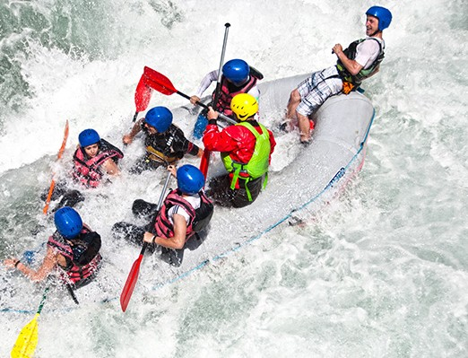
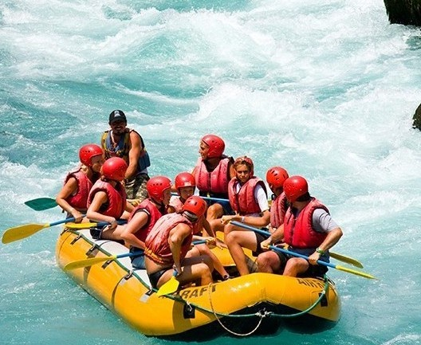
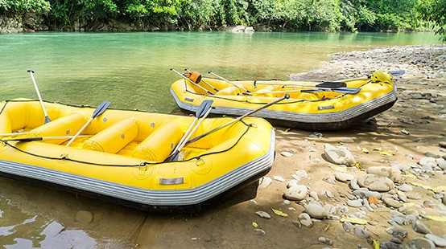

Nossa missão é proporcionar adrenalina e momentos inesquecíveis em meio à natureza, sempre priorizando a segurança, o respeito e a paixão pelos rios.

Nossa missão é proporcionar adrenalina e momentos inesquecíveis em meio à natureza, sempre priorizando a segurança, o respeito e a paixão pelos rios.
A Rafting Aventuras nasceu em 2010 da paixão de um grupo de amigos por esportes radicais e pela natureza. O que começou com apenas um bote hoje é referência em expedições aquáticas, atendendo milhares de aventureiros com a máxima segurança.




